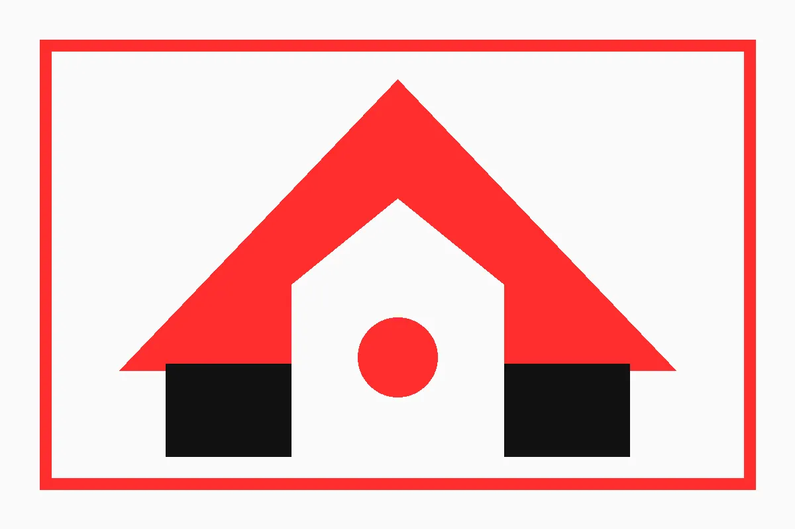

GUT INFORMIERT ANKOMMEN
ALLE INFOS.
KEIN STRESS.
Hier finden Sie Anfahrt, Antworten auf häufige Fragen und die Angaben zum Studienprojekt.
SO FINDEN SIE UNS
Anfahrt zum Zirkusplatz.
Zirkusplatz am Stadtpark
Saarlandstraße 71
22303 Hamburg
Die fiktive Veranstaltungsfläche liegt am Rand des Stadtparks. Für die Anreise empfehlen wir öffentliche Verkehrsmittel. Planen Sie ein wenig zusätzliche Zeit ein, damit Sie ohne Eile am Einlass ankommen.
Die Haltestelle Saarlandstraße wird im Veranstaltungskonzept als Orientierungspunkt genutzt. Von dort ist der Weg zum Platz ausgeschildert. Bitte beachten Sie: Die Ortsangaben dienen ausschließlich der fiktiven Ausarbeitung und stellen keine bestätigte Veranstaltungsbuchung dar.

SIE FRAGEN. WIR ANTWORTEN.
Häufige Fragen.
Wann beginnt die Veranstaltung?
Der Einlass ist ab 09:30 Uhr geplant. Die Vorstellung beginnt am Samstag, 12. Juni 2027, um 10:30 Uhr und klingt gegen 13:00 Uhr aus.
Ist die Veranstaltung für ältere Menschen geeignet?
Ja. Das Konzept richtet sich ausdrücklich auch an Rentnerinnen und Rentner. Große Schrift, deutliche Kontraste, eine übersichtliche Wegeführung, Sitzgelegenheiten und Pausen gehören zur Planung.
Kann ich mit Rollator oder Rollstuhl kommen?
Das fiktive Veranstaltungskonzept sieht barrierearme Wege und reservierbare Plätze mit mehr Bewegungsfläche vor. Konkrete bauliche Angaben können für ein reales Gelände erst nach einer Prüfung vor Ort bestätigt werden.
Gibt es Sitzplätze während der Vorstellung?
Ja. Die Vorstellung ist als bestuhlte Zeltveranstaltung gedacht. Bitte geben Sie besonderen Platzbedarf in einer realen Veranstaltung frühzeitig an. In diesem Studienprojekt werden keine Plätze tatsächlich reserviert.
Darf ich meine Enkelkinder oder Familie mitbringen?
Sehr gerne! Im Mittelpunkt stehen Sie als Seniorin oder Senior. Enkelkinder sind ausdrücklich willkommen. Auch eine Begleitperson oder die ganze Familie kann mitkommen – wir wissen aber, dass viele Angehörige vormittags arbeiten und das Angebot deshalb vor allem für Sie gedacht ist.
Was passiert bei schlechtem Wetter?
Die Vorstellung ist im Zirkuszelt geplant. Für die Anreise und den Weg zwischen Haltestelle und Einlass empfehlen wir wettergerechte Kleidung. Verbindliche Wetter- oder Ausfallinformationen gibt es für das fiktive Projekt nicht.
Kann ich Tickets online kaufen?
Nein. Die Ticketseite zeigt ein Gestaltungsbeispiel. Das Formular versendet keine Daten und löst keine Buchung aus, denn ZIRKUS! ist eine erfundene Veranstaltung im Rahmen eines Studienprojekts.
RECHTLICHES
Impressum
ZIRKUS! – Vormittagsprogramm für Senior:innen
Ein fiktives Kulturprojekt
Konzept und Gestaltung: Studienprojekt
Kontakt: keine reale Kontaktstelle vorhanden
Hinweis: Studienprojekt der Kunstschule Wandsbek, keine echte Veranstaltung.
Alle Angaben zu Datum, Ort, Programm und Preisen sind für die gestalterische Aufgabenstellung erfunden. Es besteht kein Anspruch auf Eintritt, Reservierung oder Durchführung.
MEDIEN & HERKUNFT
Bildnachweis
Alle Rasterillustrationen auf dieser Website wurden eigens für dieses Studienprojekt lokal mit Python und Pillow generiert. Die Motive zeigen abstrahierte Zirkuszelte, Artistik, Bühne, Clownerie und grafische Formen.
Die SVG-Dateien (Logo, Stern, Ticket und Manege), das Favicon sowie das animierte GIF wurden ebenfalls eigens für dieses Projekt erstellt. Es wurden keine externen Bildquellen, Bild-CDNs oder fremden Skripte eingebunden.
Die Schriftdatei „Manege Display“ basiert auf Inter Display Medium und wurde lokal als WOFF2-Datei bereitgestellt.